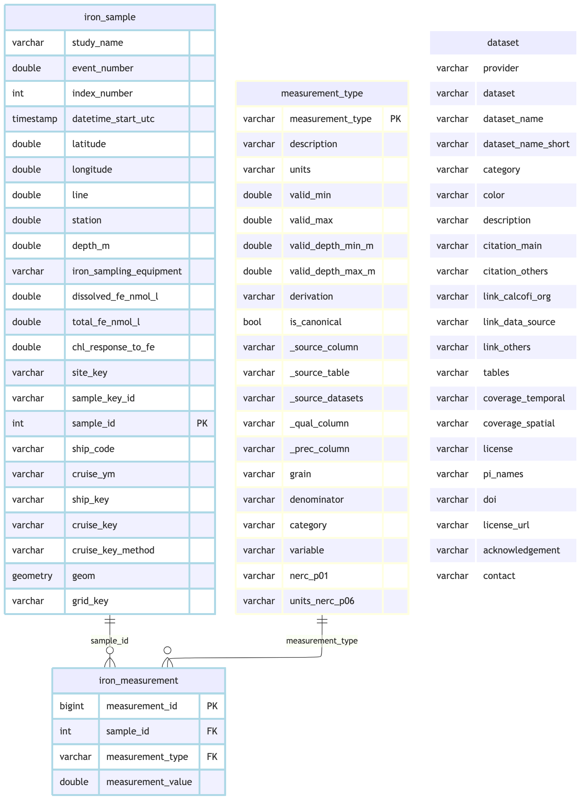

graph LR A[EDI knb-lter-cce.21.3<br/>DissolvedIron, 171 rows] --> B[rename + type-cast] B --> C[iron_sample<br/>position + depth, one row per sample] B --> D[iron_measurement<br/>long format: dissolved_iron only] C -.study_name -> cruise_key.-> E[(shared refs)] D -.sample_id.-> C C --> F[[core: sample]] D --> G[[core: obs, realm=env]]
Ingest CCE-LTER Dissolved Iron
Overview
Source: EDI package knb-lter-cce.21.3 (Barbeau), entity DissolvedIron — 171 rows, 13 columns per the package’s EML (libs/download_iron.R), Nov. 2002 - July 2004, completed/archived. This is the “first solo run” ingest tracked by CalCOFI/workflows#82; model reference is ingest_cce-lter_picoplankton-bacteria.qmd, the closest existing shape (a CCE-LTER DataZoo/EDI export with no native cast/bottle FK, its own study_name-derived cruise key, own position/depth/time per row).
- Provider:
cce-lter(matcheseuphausiids/picoplankton-bacteria/zoodb/zooscan) - Grain: one row per sample event; in this revision every row is a surface (0 m) pole sample (
Iron Sampling Equipment = p, 170/170), not a Niskin bottle or a profile. There is no cast/bottle number in the source, so this dataset mints its ownsamplearm rather than matching intocalcofi_bottle/casts(Pattern A, like picoplankton-bacteria — not Pattern B/DIC, which has cast/bottle FKs to match against). - Realm:
env— this is chemistry (dissolved iron), not an occurrence of a taxon.obs.taxon_keystays NULL throughout, unlike picoplankton-bacteria’sbiorealm. - Hold-out (decision B6, Ben Best, 2026-10-01): only
dissolved_ironis emitted.chl_response_to_feis held out ofsample/obsuntil the provider answers Q01 (is it a unitless treatment:control ratio, a concentration or a code?status = open,priority = blocker): its EMLmeasurementScaleisnominal, so publishing it as a measurement would put an uninterpreted number intoobs_env.total_ironis held out because the revision has no real value (170 of 170 rows are the-999sentinel), and a measurement type with no data does not belong in the registry or the catalog. Neither type is inmetadata/measurement_type.csv; both source columns stay in the staging tableiron_sample(counted in the Pivot chunk) so they can be emitted the day Q01 is answered or a revision populates Total Fe. - Sample key:
sample_key = cce-lter_iron:bottle:{study_name}-{index_number}, built from the source’s own (studyName,Index Number) pair, which is asserted unique below — not from row position, so a republished revision that inserts or reorders a row cannot shift a published key.sample_type = bottlefollows the family’s convention for a discrete water sample (a pole sample is surface water taken by hand into a bottle); consumers always filter bydataset_key, and the equipment code is kept iniron_sampling_equipment. - No cast matching: pole samples are taken from the ship’s side, not from a CTD/bottle cast, so there is no cast to attach to (
match_by_site_datetime()/match_nearest_by_depth()do not apply, unlikecalcofi_dic). Aparent_sample_keyto the nearest cast could be added later. - Scope decision: no bounding-box filter applied — source is already scoped to CalCOFI/CCE cruises by the provider (same reasoning as picoplankton-bacteria).
Setup
devtools::load_all(here::here("../calcofi4db"))ℹ Loading calcofi4dbdevtools::load_all(here::here("../calcofi4r"))ℹ Loading calcofi4r
Registered S3 method overwritten by 'quantmod':
method from
as.zoo.data.frame zoo librarian::shelf(
CalCOFI/calcofi4db, CalCOFI/calcofi4r,
DBI, dplyr, DT, fs, glue, here, htmltools, janitor, jsonlite, knitr,
lubridate, purrr, readr, sf, stringr, tibble, tidyr, units,
quiet = T)
options(readr.show_col_types = F)
options(DT.options = list(scrollX = TRUE))
source(here("libs/ingest.R"))
cc <- read_calcofi_meta(here("ingest_cce-lter_iron.qmd"))
provider <- cc$provider
dataset <- cc$dataset
dataset_name <- cc$dataset_meta$dataset_name
tables_owned <- cc$tables_owned
dir_label <- glue("{provider}_{dataset}")
dir_parquet <- here(glue("data/parquet/{dir_label}"))
dir_stage <- cc_stage_path("parquet", dir_label, create = TRUE)
db_path <- here(glue("data/wrangling/{dir_label}.duckdb"))
meas_type_csv <- here("metadata/measurement_type.csv")
# dissolved_iron was registered directly into the registry during
# /generate-metadata (metadata/measurement_type.csv), not here at ingest time —
# this notebook reads and uses it, it does not (re-)register it. total_iron and
# chl_response_to_fe are deliberately NOT registered (held out, see Overview).
d_meas_type <- read_measurement_type(meas_type_csv)
stopifnot(
"dissolved_iron must be pre-registered" =
"dissolved_iron" %in% d_meas_type$measurement_type,
"held-out types must stay unregistered until Q01 / a populated Total Fe" =
!any(c("total_iron", "chl_response_to_fe") %in% d_meas_type$measurement_type))
if (overwrite) {
if (file_exists(db_path)) file_delete(db_path)
if (file_exists(paste0(db_path, ".wal"))) file_delete(paste0(db_path, ".wal"))
if (dir_exists(paste0(db_path, ".tmp"))) dir_delete(paste0(db_path, ".tmp"))
}
dir_create(dirname(db_path))
con <- get_duckdb_con(db_path)duckdb is storing downloaded extensions and secrets under ~/.duckdb:
ℹ /Users/bbest/.duckdb
This persists across sessions and is shared with the DuckDB CLI and other clients.
ℹ Run duckdb(shared_home = FALSE) to use a temporary directory instead.
ℹ See ?duckdb_storage for details and alternatives.load_duckdb_extension(con, "spatial")Loaded extension: spatialdbWriteTable(con, "measurement_type", d_meas_type, overwrite = TRUE)Read Source Data
Fetched reproducibly from EDI by libs/download_iron.R (package knb-lter-cce.21.3, entity DissolvedIron), pinned to revision 3 with its md5 asserted, so a republished package fails loudly instead of silently re-shaping the ingest. Unlike picoplankton-bacteria’s Datazoo table, this entity is not gated behind a login/data-agreement form, so it is pulled directly from EDI — same route as download_euphausiids(). Columns are renamed per metadata/cce-lter/iron/flds_redefine.csv.
source(here("libs/download_iron.R"))
iron_csv <- download_iron(
path_expand(glue("{dir_data}/{provider}/{dataset}")),
overwrite = overwrite_all)EDI: using cached data.csv stopifnot("iron data.csv not found" = file_exists(iron_csv))
sync_to_gcs(
local_dir = path_dir(iron_csv),
gcs_prefix = glue("archive/{provider}/{dataset}"),
bucket = "calcofi-files-public",
exclude = c(".DS_Store", "*.tmp", "*.gdoc"))rsync /private/tmp/claude-501/-Users-bbest-Github-CalCOFI-workflows/88c4eb29-8a2b-4fca-8a84-aef700df328c/scratchpad/data-public/cce-lter/iron -> gs://calcofi-files-public/archive/cce-lter/ironSync complete: 1 copied, 0 removed (rsync)# A tibble: 1 × 4
file action size reason
<chr> <chr> <dbl> <chr>
1 <rsync> uploaded NA parallel rsyncd_raw <- read_csv(iron_csv, col_types = cols(.default = "c"))
cat(glue("Read {format(nrow(d_raw), big.mark=',')} rows, {ncol(d_raw)} columns"), "\n")Read 171 rows, 13 columns # confirmed against the real file (2026-09-19): 171 rows, 13 columns, matching
# the EML's 13 attributes -- DataZoo's summary page figure of 12 columns was
# stale/wrong and is not asserted here.
stopifnot(
"expected 171 rows x 13 columns per the real source file" =
nrow(d_raw) == 171 && ncol(d_raw) == 13)Clean, Type-Cast
Canonical names from metadata/cce-lter/iron/flds_redefine.csv. Event Number is the source’s own provenance counter (unpopulated here), kept but not used as a key. studyName + Index Number is the natural sample key (asserted unique below); sample_id is only the integer pivot FK between iron_sample and iron_measurement, assigned in that key’s order so it is deterministic. Only the Dissolved Fe column is pivoted to long format below; Total Fe and Chla response to Fe+ are held out of the emitted tables (Overview). Real source headers carry unit suffixes the EML’s attributeName elements omit (Latitude (º), Longitude (º), Depth (m), Dissolved Fe (nM/L), Total Fe (nM/L)) — confirmed against the real file (2026-09-19) and reflected in the column references below and in flds_redefine.csv.
Datetime PST is converted to UTC as a fixed UTC-8 offset, not adjusted for daylight saving — the column is explicitly labeled PST rather than “Pacific Time” or “local time”, which is the reading proposed to the provider in questions.csv Q02 (status = proposed, awaiting confirmation). If that reading is wrong, every datetime_start_utc value shifts by up to an hour for rows sampled during PDT months — re-derive from Datetime PST rather than patching datetime_start_utc directly if Q02 comes back answered differently.
One source row (line 80 of the real CSV) is entirely blank apart from studyName and is dropped explicitly below, with a reported count, rather than letting the resulting NAs flow into add_point_geom() / assign_grid_key() downstream. Separately, -999 is used throughout this table as an undocumented missing-value sentinel (questions.csv Q06 — the EML itself declares missingValueCode = NULL/blank for every attribute) and is converted to NA before casting, for the same reason check_measurement_bounds()/drop_out_of_bounds() exist: an unconverted sentinel reaching obs.measurement_value as if it were a real reading is exactly the failure mode behind the historical calcofi_mets.sw_ph -99 incident (RUNBOOK.md).
# one fully-blank row (source keeps only studyName; every other field is
# empty) — verified 2026-09-19 to be exactly 1 row (CSV line 80,
# `2002-11-10-C-32NM,,,,,,,,,,,,`)
d_raw <- d_raw |>
mutate(.blank = if_all(-studyName, ~ is.na(.x) | .x == ""))
n_blank <- sum(d_raw$.blank)
d_raw <- d_raw |> filter(!.blank) |> select(-.blank)
cat(glue("Dropped {n_blank} fully-blank row(s) (studyName only, no measurements)"), "\n")Dropped 1 fully-blank row(s) (studyName only, no measurements) # -999 is an undocumented missing-value sentinel (see Q06 above). Converted
# to NA before casting for every column verified to carry it: event_number
# (170/171 rows), total_fe_nmol_l (170/171 rows — zero real values in this
# revision), and chl_response_to_fe (148/171 rows).
na_sentinel <- function(x) if_else(x == "-999", NA_character_, x)
d_clean <- d_raw |>
transmute(
study_name = studyName,
event_number = suppressWarnings(as.numeric(na_sentinel(`Event Number`))),
index_number = suppressWarnings(as.integer(`Index Number`)),
# fixed UTC-8: see Q02 above — the source column is literally "Datetime PST"
datetime_start_utc = suppressWarnings(as_datetime(`Datetime PST`)) + hours(8),
latitude = suppressWarnings(as.numeric(`Latitude (º)`)),
longitude = suppressWarnings(as.numeric(`Longitude (º)`)),
line = suppressWarnings(as.numeric(Line)),
station = suppressWarnings(as.numeric(Station)),
depth_m = suppressWarnings(as.numeric(`Depth (m)`)),
iron_sampling_equipment = `Iron Sampling Equipment`,
dissolved_fe_nmol_l = suppressWarnings(as.numeric(na_sentinel(`Dissolved Fe (nM/L)`))),
total_fe_nmol_l = suppressWarnings(as.numeric(na_sentinel(`Total Fe (nM/L)`))),
chl_response_to_fe = suppressWarnings(as.numeric(na_sentinel(`Chla response to Fe+`)))) |>
mutate(
site_key = if_else(
is.na(line) | is.na(station), NA_character_,
sprintf("%05.1f %05.1f", line, station)),
# natural, stable sample key (study + the source's per-cruise counter);
# '-' not ':' so the key's own colon-delimited id stays one token
sample_key_id = paste0(study_name, "-", index_number)) |>
arrange(study_name, index_number) |>
mutate(sample_id = row_number())
stopifnot(
"index_number must parse for every row" = !anyNA(d_clean$index_number),
"(study_name, index_number) must be unique: it is the sample key" =
!anyDuplicated(d_clean$sample_key_id))
cat(glue("sample_key_id unique over {nrow(d_clean)} rows ",
"({n_distinct(d_clean$study_name)} cruises)"), "\n")sample_key_id unique over 170 rows (6 cruises) n_all <- nrow(d_clean)
cat(glue("{format(n_all, big.mark=',')} rows read, no bounding-box filter applied ",
"(source pre-scoped to CalCOFI/CCE cruises)"), "\n")170 rows read, no bounding-box filter applied (source pre-scoped to CalCOFI/CCE cruises) n_equip_other <- sum(!is.na(d_clean$iron_sampling_equipment) &
d_clean$iron_sampling_equipment != "p")
cat(glue("Iron Sampling Equipment codes other than documented 'p': {n_equip_other} row(s) ",
"— if > 0, resolve against Q03 before publishing (0 expected — Q03 resolved 2026-09-19)"), "\n")Iron Sampling Equipment codes other than documented 'p': 0 row(s) — if > 0, resolve against Q03 before publishing (0 expected — Q03 resolved 2026-09-19) dbWriteTable(con, "iron_sample", d_clean, overwrite = TRUE)Pivot Measurements to Long Format
Only dissolved_iron is pivoted to iron_measurement (the table that is projected into obs). chl_response_to_fe (Q01 open/blocker: units and meaning unconfirmed) and total_iron (no real values) are held out: their non-NULL counts are reported below, their columns stay in iron_sample (a staging table that is not released), and neither is registered in metadata/measurement_type.csv nor emitted. To release one, answer Q01 / find a populated Total Fe, register the type with register_measurement_types() + declare_measurement_fields() (a category), add it to iron_meas_map and revisit its bounds.
iron_meas_map <- tribble(
~measurement_type, ~value_col,
"dissolved_iron", "dissolved_fe_nmol_l")
sql_parts <- purrr::pmap_chr(iron_meas_map, function(measurement_type, value_col) {
glue(
"SELECT sample_id, '{measurement_type}' AS measurement_type,
CAST({value_col} AS DOUBLE) AS measurement_value
FROM iron_sample WHERE {value_col} IS NOT NULL")
})
sql_create <- glue(
"CREATE OR REPLACE TABLE iron_measurement AS
SELECT ROW_NUMBER() OVER (ORDER BY sample_id, measurement_type) AS measurement_id, *
FROM (
{paste(sql_parts, collapse = '\nUNION ALL\n')}
) sub")
dbExecute(con, sql_create)[1] 170n_meas <- dbGetQuery(con, "SELECT COUNT(*) FROM iron_measurement")[[1]]
cat(glue("iron_measurement: {format(n_meas, big.mark=',')} rows"), "\n")iron_measurement: 170 rows dbGetQuery(con, "SELECT measurement_type, COUNT(*) n FROM iron_measurement GROUP BY 1 ORDER BY 1") |>
datatable(caption = "Rows per measurement_type")# held-out columns: report, then keep them in iron_sample only
n_held <- dbGetQuery(con, "
SELECT COUNT(total_fe_nmol_l) AS total_iron_n,
COUNT(chl_response_to_fe) AS chl_response_to_fe_n
FROM iron_sample")
cat(glue("held out (not emitted): total_iron {n_held$total_iron_n} real value(s), ",
"chl_response_to_fe {n_held$chl_response_to_fe_n} value(s) pending Q01"), "\n")held out (not emitted): total_iron 0 real value(s), chl_response_to_fe 22 value(s) pending Q01 stopifnot("total_iron was expected to have no real value in revision 3" =
n_held$total_iron_n == 0)
# dissolved iron at/near the minimum: the 0.05 floor may be a detection limit
# (Q04) — report, do not interpret
d_fe <- dbGetQuery(con, "SELECT measurement_value v FROM iron_measurement")$v
cat(glue("dissolved_iron: min {min(d_fe)} nmol/L; n at the minimum = ",
"{sum(d_fe == min(d_fe))}, n within 2x of the minimum = ",
"{sum(d_fe <= 2 * min(d_fe))} of {length(d_fe)} (Q04: is the floor a ",
"detection limit?)"), "\n")dissolved_iron: min 0.05 nmol/L; n at the minimum = 2, n within 2x of the minimum = 13 of 170 (Q04: is the floor a detection limit?) Resolve Ship and Cruise Keys
Same approach as ingest_cce-lter_picoplankton-bacteria.qmd: study_name is the only cruise identifier in this source (no separate Cruise short-code column here), and its trailing token is the ship code.
The extraction regex below is copied from the picoplankton-bacteria notebook’s verified pattern (2004-11-02-C-33RR -> 33RR). Confirmed 2026-09-19 against all 6 distinct study_name values in the real file (e.g. 2002-11-10-C-32NM) — the format matches structurally. derive_cruise_key_on_casts() resolves every row by date span (see the rendered key_stats).
load_prior_tables(
con, parquet_dir = cc_stage_path("parquet", "swfsc_ichthyo"),
tables = c("ship", "cruise", "grid"), geom_tables = c("grid"), as_view = TRUE)Loaded cruise: 691 rows (VIEW)Loaded grid: 218 rows (VIEW) (GEOMETRY)Loaded ship: 48 rows (VIEW)# A tibble: 3 × 3
table rows has_geom
<chr> <dbl> <lgl>
1 cruise 691 FALSE
2 grid 218 TRUE
3 ship 48 FALSE dbExecute(con, "
ALTER TABLE iron_sample ADD COLUMN IF NOT EXISTS ship_code VARCHAR")[1] 0dbExecute(con, "
UPDATE iron_sample
SET ship_code = regexp_extract(study_name, '[0-9A-Z]+$')")[1] 170dbExecute(con, "
ALTER TABLE iron_sample ADD COLUMN IF NOT EXISTS cruise_ym VARCHAR")[1] 0dbExecute(con, "
UPDATE iron_sample
SET cruise_ym = regexp_replace(study_name, '^(\\d{4})-(\\d{2}).*$', '\\1\\2')")[1] 170cruise_key_result <- derive_cruise_key_on_casts(
con, table_name = "iron_sample", datetime_col = "datetime_start_utc",
cruise_ym_col = "cruise_ym")0 unmatched ship codes in iron_sampleNo unmatched ships to reconcileExact ship_nodc match: 170 rowscruise_key on iron_sample: span 170All ship codes matched!cruise_key_result$key_stats |>
datatable(caption = "cruise_key resolution: span > source designation > month")n_ck <- dbGetQuery(con, "SELECT COUNT(*) FROM iron_sample WHERE cruise_key IS NOT NULL")[[1]]
n_all <- dbGetQuery(con, "SELECT COUNT(*) FROM iron_sample")[[1]]
cat(glue("cruise_key match: {n_ck}/{n_all} ({round(100*n_ck/n_all,1)}%)"), "\n")cruise_key match: 170/170 (100%) Add Spatial
add_point_geom(con, "iron_sample", lon_col = "longitude", lat_col = "latitude")Added geom column to iron_sample tableassign_grid_key(con, "iron_sample") |> datatable(caption = "Grid assignment")Assigned grid_key to iron_sample: in_grid = 170Load Dataset Metadata
d_dataset <- ingest_yaml_to_dataset_df(read_ingest_yaml(here()))
dbWriteTable(con, "dataset", d_dataset, overwrite = TRUE)
cat(glue("dataset: {nrow(d_dataset)} datasets registered"), "\n")dataset: 18 datasets registered Schema Documentation
iron_rels <- list(
primary_keys = list(
iron_sample = "sample_id",
iron_measurement = "measurement_id",
measurement_type = "measurement_type"),
foreign_keys = list(
list(table = "iron_measurement", column = "sample_id",
ref_table = "iron_sample", ref_column = "sample_id"),
list(table = "iron_measurement", column = "measurement_type",
ref_table = "measurement_type", ref_column = "measurement_type")))
cc_erd(
con, tables = c("iron_sample", "iron_measurement", "measurement_type", "dataset"),
rels = iron_rels,
colors = list(lightblue = c("iron_sample", "iron_measurement"),
lightyellow = "measurement_type", white = "dataset"))
build_relationships_json(
rels = iron_rels, output_dir = dir_parquet, provider = provider, dataset = dataset)Wrote relationships.json: 3 PKs, 2 FKs[1] "/Users/bbest/Github/CalCOFI/.worktrees/workflows-pr116/data/parquet/cce-lter_iron/relationships.json"Check Declared Bounds
Not optional (RUNBOOK.md §3b) and an explicit completion criterion of issue #82. The one emitted type, dissolved_iron, carries valid_min = 0 (registered during /generate-metadata); a one-sided bound counts as declared for check_measurement_bounds(), so it reports ok. Its valid_max is not declared: questions.csv Q05 proposes 50 nmol/L to Kathy — a generous ceiling (~6x the observed maximum of 8.2 nmol/L), never the observed range itself — and it stays proposed until she agrees. The held-out types (total_iron, chl_response_to_fe) are not registered, so they have no bound to check; a bound for chl_response_to_fe is meaningless until Q01 says what the number is.
bounds_pre <- check_measurement_bounds(con, "iron_measurement", mt = d_meas_type)
bounds_datatable(bounds_pre)bounds_pre |> filter(status != "ok") |> select(measurement_type, status, finding) |>
datatable(caption = "Bounds findings (empty = every emitted type is ok) — dissolved_iron: valid_min=0 declared, valid_max proposed in Q05 but not declared")# dissolved_iron carries a declared valid_min = 0 floor; its valid_max awaits Q05
oob_tally <- drop_out_of_bounds(con, "iron_measurement", mt = d_meas_type)iron_measurement: no values outside declared boundscat(glue(
"out-of-range rows removed: {format(sum(oob_tally$n_bad %||% 0), big.mark=',')} ",
"(dissolved_iron < 0 is enforceable today; the upper bound awaits Q05)"), "\n")out-of-range rows removed: 0 (dissolved_iron < 0 is enforceable today; the upper bound awaits Q05) bounds_post <- check_measurement_bounds(
con, "iron_measurement", mt = d_meas_type, include_undeclared = FALSE)
stopifnot(
"iron_measurement must hold no value outside a DECLARED bound" =
sum(bounds_post$status == "out_of_range") == 0)Validate
results <- validate_for_release(con, checks = "all", strict = FALSE)
cat("Validation:", ifelse(results$passed, "PASSED", "FAILED"), "\n")Validation: PASSED if (length(results$errors) > 0)
cat("Errors:\n", paste("-", results$errors, collapse = "\n"), "\n")
if (length(results$warnings) > 0)
cat("Warnings:\n", paste("-", results$warnings, collapse = "\n"), "\n")
# cruise_key resolution is reported (and gated at release by
# check_cruise_key_integrity()); sample_id is the pivot FK, so it is checked here
n_dup <- dbGetQuery(con,
"SELECT COUNT(*) FROM (SELECT sample_id, COUNT(*) n FROM iron_sample GROUP BY sample_id HAVING COUNT(*)>1)")[[1]]
cat(glue("iron_sample sample_id duplicates: {n_dup}"), "\n")iron_sample sample_id duplicates: 0 n_orphan <- dbGetQuery(con,
"SELECT COUNT(*) FROM iron_measurement m
LEFT JOIN iron_sample s ON m.sample_id = s.sample_id
WHERE s.sample_id IS NULL")[[1]]
cat(glue("Orphan measurements (no matching sample): {n_orphan}"), "\n")Orphan measurements (no matching sample): 0 n_orphan_type <- dbGetQuery(con,
"SELECT COUNT(*) FROM iron_measurement m
WHERE m.measurement_type NOT IN (SELECT measurement_type FROM measurement_type)")[[1]]
cat(glue("Orphan measurement_types (not registered): {n_orphan_type}"), "\n")Orphan measurement_types (not registered): 0 Enforce Column Types
enforce_column_types(con)Enforced column types: 0 changed, 0 failed, 95 already correct# A tibble: 0 × 5
# ℹ 5 variables: table <chr>, column <chr>, from_type <chr>, to_type <chr>,
# success <lgl>Data Preview
cols <- dbGetQuery(con,
"SELECT column_name FROM information_schema.columns
WHERE table_name='iron_sample' AND data_type NOT LIKE 'GEOMETRY%'")$column_name
dbGetQuery(con, glue("SELECT {paste(cols, collapse=', ')} FROM iron_sample LIMIT 200")) |>
datatable(caption = "iron_sample — all rows (source table is 171 rows)", rownames = FALSE, filter = "top")dbGetQuery(con, "SELECT * FROM iron_measurement LIMIT 200") |>
datatable(caption = "iron_measurement — all rows", rownames = FALSE, filter = "top")Emit Core Tables
Project this dataset into the shared consolidated core model (design_env-bio-consolidation.md). Realm env throughout — no taxon involved. This is a self-contained sample arm: the source carries no cast/bottle FK to match against (unlike calcofi_dic; a pole sample is not taken from a cast, so cast matching does not apply), so every sample mints its own sample row via sample_arm_self(), same as picoplankton-bacteria’s bottle arm. The key id is iron_sample.sample_key_id (study_name-index_number, asserted unique above), giving cce-lter_iron:bottle:{study_name}-{index_number}. Only iron_measurement (dissolved iron) is projected; the held-out types never reach obs.
ds_key <- "cce-lter_iron"
append_sample(con, sample_arm_self(
ds_key, "iron_sample", "sample_key_id", "bottle",
dt_col = "datetime_start_utc", site_expr = "site_key",
depth_min = "depth_m", depth_max = "depth_m"))Loaded extension: spatial# env realm: NULL taxon_key throughout — this is chemistry + a bioassay
# response metric, not an occurrence
append_obs(con, glue("
SELECT 'env', '{ds_key}', {ns_key(ds_key, 'bottle', 's.sample_key_id')},
s.grid_key, s.cruise_key, s.latitude, s.longitude,
CAST(s.datetime_start_utc AS TIMESTAMP), s.depth_m, s.depth_m,
NULL::VARCHAR, NULL::VARCHAR, m.measurement_type, m.measurement_value,
NULL::VARCHAR, NULL::DOUBLE
FROM iron_measurement m
JOIN iron_sample s USING (sample_id)"))Loaded extension: h3core <- list(
sample = dbGetQuery(con, "SELECT COUNT(*) FROM sample")[[1]],
obs = dbGetQuery(con, "SELECT COUNT(*) FROM obs")[[1]])
cat(glue("core projection — sample={core$sample %||% 0} obs={core$obs %||% 0}\n"))core projection — sample=170 obs=170n_obs <- core$obs
n_exp <- dbGetQuery(con,
"SELECT COUNT(*) FROM iron_measurement m JOIN iron_sample s USING (sample_id)")[[1]]
stopifnot(
"obs must be one row per measurement" = n_obs == n_exp,
"only dissolved_iron may be emitted (Q01 / empty Total Fe hold-out)" =
identical(dbGetQuery(con, glue(
"SELECT DISTINCT measurement_type FROM obs WHERE dataset_key = '{ds_key}'"
))$measurement_type, "dissolved_iron"),
"sample_key must be unique in sample" =
dbGetQuery(con, glue("SELECT COUNT(*) - COUNT(DISTINCT sample_key) FROM sample
WHERE dataset_key = '{ds_key}'"))[[1]] == 0,
"every obs.sample_key must resolve in sample" =
dbGetQuery(con, "SELECT COUNT(*) FROM obs o LEFT JOIN sample s USING (sample_key)
WHERE s.sample_key IS NULL")[[1]] == 0)
cat(glue("obs parity: {format(n_obs, big.mark=',')} rows"), "\n")obs parity: 170 rows # serve the retired per-dataset table name as a VIEW over the core, so
# in-notebook consumers and ad-hoc queries keep working against the old name
invisible(dbExecute(con, "DROP TABLE IF EXISTS iron_measurement_src"))
invisible(dbExecute(con, "ALTER TABLE iron_measurement RENAME TO iron_measurement_src"))
invisible(dbExecute(con, glue(
"CREATE OR REPLACE VIEW iron_measurement AS
SELECT o.obs_id AS measurement_id,
o.sample_key,
substr(o.sample_key, length('{ds_key}:bottle:') + 1) AS sample_key_id,
o.measurement_type, o.measurement_value, o.measurement_qual
FROM obs o WHERE o.dataset_key = '{ds_key}'")))
cat(glue("compat view iron_measurement over obs: ",
"{dbGetQuery(con, 'SELECT COUNT(*) FROM iron_measurement')[[1]]} rows"), "\n")compat view iron_measurement over obs: 170 rows Write Parquet Outputs
dir_create(dir_parquet)
mismatches <- list(cruise_keys = collect_cruise_key_mismatches(con, "iron_sample"))
tbls_out <- core_output_tables(con, extra = c("measurement_type", "dataset"))
parquet_stats <- write_parquet_outputs(
con = con, output_dir = dir_parquet,
tables = tbls_out,
sort_by = list(obs = c("grid_key", "measurement_type")),
strip_provenance = FALSE, mismatches = mismatches)Exported sample: 170 rows, 0.01 MBExported obs: 170 rows, 0.01 MB sorted:grid_key,measurement_typeExported measurement_type: 212 rows, 0.02 MBExported dataset: 18 rows, 0.01 MBWrote manifest to /Users/bbest/Github/CalCOFI/.worktrees/workflows-pr116/data/parquet/cce-lter_iron/manifest.jsonbuild_relationships_json(
rels = core_relationships(tbls_out), output_dir = dir_parquet,
provider = provider, dataset = dataset)Wrote relationships.json: 4 PKs, 4 FKs[1] "/Users/bbest/Github/CalCOFI/.worktrees/workflows-pr116/data/parquet/cce-lter_iron/relationships.json"parquet_stats |> mutate(file = basename(path)) |> select(-path) |>
datatable(caption = "Parquet export statistics")Write Metadata
d_tbls_rd <- read_csv(here("metadata/cce-lter/iron/tbls_redefine.csv"))
d_flds_rd <- read_csv(here("metadata/cce-lter/iron/flds_redefine.csv"))
metadata_path <- build_metadata_json(
con = con, d_tbls_rd = d_tbls_rd, d_flds_rd = d_flds_rd,
metadata_derived_csv = c(here("metadata/core_dictionary.csv"),
here("metadata/cce-lter/iron/metadata_derived.csv")),
output_dir = dir_parquet, tables = tbls_out,
set_comments = TRUE, provider = provider, dataset = dataset,
workflow_url = cc$workflow_url, tables_owned = tables_owned)Set DuckDB COMMENT ON for tables and columnsWrote metadata.json: 4 tables, 77 columnsmetadata.json documentation gaps (4 tables, 77 columns) — these render blank in cc_describe_table() / cc_db_catalog():
tables with no description_md: 2 measurement_type, dataset
columns with no description_md: 42 dataset.provider, dataset.dataset, dataset.dataset_name, dataset.dataset_name_short, dataset.category, dataset.color, dataset.description, dataset.citation_main, dataset.citation_others, dataset.link_calcofi_org, dataset.link_data_source, dataset.link_others (+30 more)
measurement columns with no units: 27 dataset.dataset_name_short, dataset.category, dataset.color, dataset.citation_main, dataset.citation_others, dataset.link_calcofi_org, dataset.link_data_source, dataset.link_others, dataset.tables, dataset.coverage_temporal, dataset.coverage_spatial, dataset.license (+15 more)
backfill via metadata/{provider}/{dataset}/flds_redefine.csv, then re-runUpload to GCS
if (Sys.getenv("CALCOFI_SKIP_GCS") == "") {
sync_to_gcs(local_dir = dir_stage, sidecar_dir = dir_parquet, gcs_prefix = glue("ingest/{dir_label}"), bucket = "calcofi-db")
} else cat("CALCOFI_SKIP_GCS set — skipping the upload (local verification run)\n")rsync /Users/bbest/_big/calcofi/parquet/cce-lter_iron -> gs://calcofi-db/ingest/cce-lter_ironCopied 3 sidecar(s) from /Users/bbest/Github/CalCOFI/.worktrees/workflows-pr116/data/parquet/cce-lter_ironSync complete: 7 copied, 0 removed (rsync)# A tibble: 7 × 4
file action size reason
<chr> <chr> <dbl> <chr>
1 <rsync> uploaded NA parallel rsync
2 <rsync> uploaded NA parallel rsync
3 <rsync> uploaded NA parallel rsync
4 <rsync> uploaded NA parallel rsync
5 <rsync> uploaded NA parallel rsync
6 <rsync> uploaded NA parallel rsync
7 <rsync> uploaded NA parallel rsyncQuestions for Data Providers
Follow-up questions for CCE-LTER (Katherine Barbeau), ranked by importance. Tracked in metadata/cce-lter/iron/questions.csv. Q03 is resolved by direct inspection of the real data. Q01 (open, blocker) holds chl_response_to_fe out of the release until the provider says what the number is (Overview, Hold-out). Q04 (units, detection limit, whether the 0.05 nmol/L floor is a limit; open, high) is the main science caveat on the emitted dissolved_iron, published as nmol/L on the EML’s reading alone. Q02, Q05, Q06 are proposed (each carries an evidence-backed answer awaiting Kathy’s confirmation). Total Fe has no real value in this revision (Q06 records the -999 convention); that is why total_iron is not registered. Because Q01 is open + blocker, /validate-ingest --strict is expected to flag it; that is the intended reminder, not a failure of this ingest.
questions_datatable(
here(cc$questions_file),
caption = "Questions for the cce-lter iron data providers (ranked)")Cleanup
close_duckdb(con)
cat(glue("parquet outputs written to: {dir_parquet}"), "\n")parquet outputs written to: /Users/bbest/Github/CalCOFI/.worktrees/workflows-pr116/data/parquet/cce-lter_iron